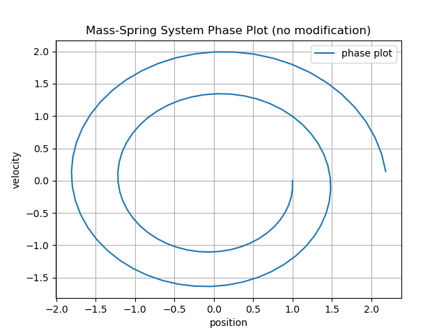
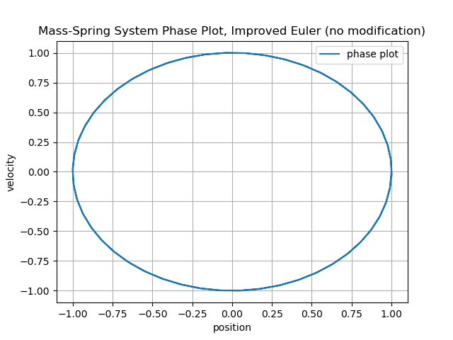
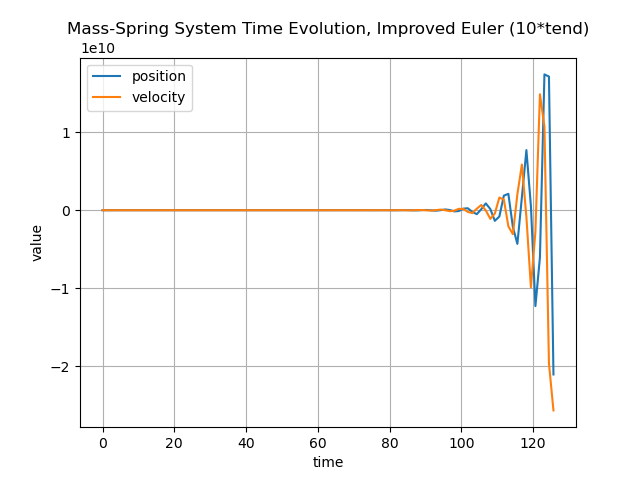
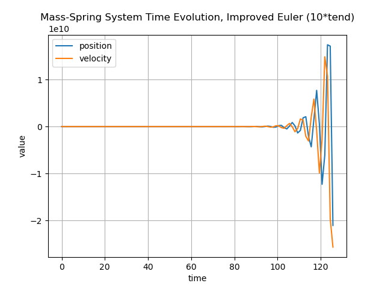
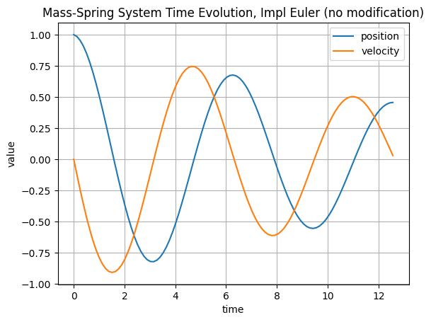
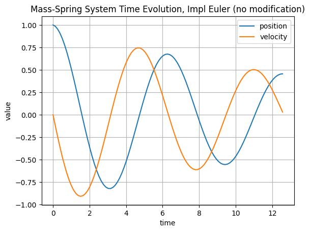
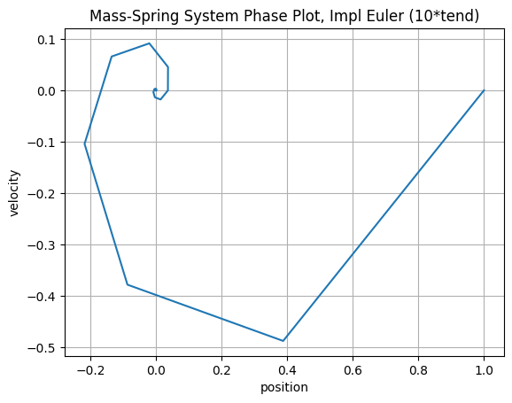
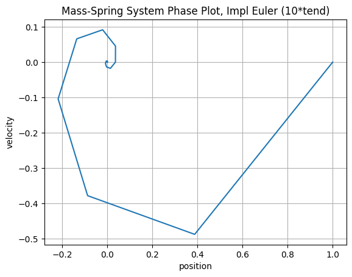

Exercise 1#
Different time-steps and larger end-times#
Exact solution of mass-spring ODE results in sinusoidal oscillation over time (time evolution) and circular phase plot. The updates with explicit Euler are not (totally) energy conserving and so numerical errors accumulate over time. In the following plots different time-step sizes are combined with varying end-times. Their effect on the accuracy of the resulting numerical solution is interpreted.
Base configuration#
The first row corresponds to the given parameters for time-step and end-time.
Calculation time: \(t_{end} = 4*\pi = T\)
Number of steps: \(n = 100 = N\)
Frequency: \(\tau= \frac{t_{end}}{n} = \frac{T}{N}= \frac{4*\pi}{100}\)
More time steps#
The second row displays results for 10-times smaller time steps.
Calculation time: \(t_{end} = T\)
Number of steps: \(n = N*10\)
Frequency: \(\tau= \frac{t_{end}}{n} = \frac{T}{N*10}\)
Longer simulation#
The third row shows results for a 10-times bigger end-time.
Calculation time: \(t_{end} = T*10\)
Number of steps: \(n = N\)
Frequency: \(\tau= \frac{t_{end}}{n} = \frac{T*10}{N}\)
Longer simulation with more time steps#
The last row shows what a combined 10-times smaller time steps and 10-times bigger end-time results in.
Calculation time: \(t_{end} = T*10\)
Number of steps: \(n = N*10\)
Frequency: \(\tau= \frac{t_{end}}{n} = \frac{T*10}{N*10}= \frac{T}{N}\)
Explicit Euler#
When the time interval is divided into ten times more steps, the explicit Euler method produces more intermediate approximations with smaller local, numerical errors. This results in a solution that more closely matches the analytical sinusoid. This is also reflected in the plots, as the numerical solution is closer to a circle in the phase plot (reduced spiral artifacts), and a sinusiod over time (amplitude preservation).
When the end-time is increased while keeping the number of steps constant, the step size becomes larger. This reduces the number of intermediate approximations and increases the local numerical error. Because explicit Euler propagates each step from the previous one, these errors accumulate over time, leading to a larger overall deviation from the exact solution. This can be seen in the plots: the phase plot no longer resembles a circle, and the time evolution shows an almost flat sinusoid with growing deviations toward the end (amplitude grows beyond analytical bounds).
Increasing both the number of steps and the end-time by the same factor keeps the step size unchanged, so one might expect the results to somewhat match the original calculation. However, although the local error per step is the same, the longer simulation involves more steps, and because explicit Euler propagates errors, the solution gradually deviates more from the exact trajectory.
{kind=link}


Improved Euler#
In contrast to the Explicit Euler method, the improved Euler method is more stable with longer similuation time (as long as the number of steps is scaled accordingly).
{kind=link}


 

{kind=link}


Implicit Euler#
With the implicit Euler method we observe similar to behavior and stability as the explicit Euler method with the sole difference that instability manifests itself as exponential dampening rather than exponential growth.
 

{kind=link}

 

{kind=link}


Crank-Nicolson#
Similar to the improved Euelr for the explicit Euler, the Crank-Nicolson method is a more stable version of the implicit Euler method. As seen in the plots, Crank-Nicolson has improved stability over the implicit Euler method as the similuation time is increased. Notably, it is even stabler then the improved Euler as the number of steps gets smaller, i.e. the step size get larger; the phase diagram is still circular, although with some artifact but does not spiral.


Reproducing the datasets#
All curves for Exercise 1 were generated from the build/ directory with the following commands (named CLI options are required now):
cd build
# Explicit Euler
./test_ode --stepper exp_euler
./test_ode --stepper exp_euler --n-factor 10
./test_ode --stepper exp_euler --t-end-factor 10
./test_ode --stepper exp_euler --n-factor 10 --t-end-factor 10
# Improved Euler
./test_ode --stepper impr_euler
./test_ode --stepper impr_euler --n-factor 10
./test_ode --stepper impr_euler --t-end-factor 10
./test_ode --stepper impr_euler --n-factor 10 --t-end-factor 10
# Implicit Euler
./test_ode --stepper impl_euler
./test_ode --stepper impl_euler --n-factor 10
./test_ode --stepper impl_euler --t-end-factor 10
./test_ode --stepper impl_euler --n-factor 10 --t-end-factor 10
# Crank–Nicolson
./test_ode --stepper crank_nicolson
./test_ode --stepper crank_nicolson --n-factor 10
./test_ode --stepper crank_nicolson --t-end-factor 10
./test_ode --stepper crank_nicolson --n-factor 10 --t-end-factor 10
Each run produces a mass_spring_<stepper>_<suffix>.txt file inside build/. To obtain the figures used in the report, run the plotting helper from the repository root (it automatically looks inside build/ when only a filename is supplied):
python _static/demos/plot_ode_results.py mass_spring_exp_euler_nomod.txt
python _static/demos/plot_ode_results.py mass_spring_exp_euler_10steps.txt
python _static/demos/plot_ode_results.py mass_spring_exp_euler_10tend.txt
python _static/demos/plot_ode_results.py mass_spring_exp_euler_10tend_10steps.txt
# …repeat for impr_euler, impl_euler, crank_nicolson
Each invocation drops the corresponding mass_spring_time_evolution_*.png and mass_spring_phase_*.png files into the stepper-specific folder under _static/demos/.